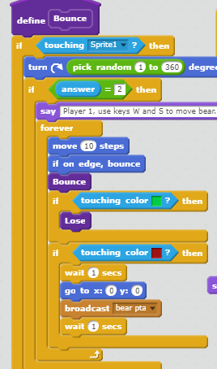

I am a rising junior at Crossroads High School . In my free time I enjoy reading. playing tennis, and drinking coffee. I love school, and my favorite subjects are history and English. I joined Girls Who Code this Summer because I spend a lot of time online, and I want to know the science behind it.
Today we used Python for the first time. It was fun using a more advanced programming language, and it was very different from Scratch because it was harder to use and more advanced. Python was also less likely to glitch, and when we coded a program that made shapes it did not break if the input value was under 500. In scratch, the code broke at 16 when I made a similar program.
As we learn the basics of programming, the "Core 4" are a list of key concepts. They are listed below, along with a definition, real life example, and an example of code
A loop is added to a code so that it continually repeats a series of instructions. For example, if you apply a "forever loop" to a code which instructs a sprite to walk five steps to their left, the sprite will keep walking to the left forever.
Sample Code:
A variable is used to simplify a code, and it is a word which represents a series of actions and, when changed in one place, changes throughout the entire code.
Example Code:
A conditional statement commands something when it meets a certain standard. For example, when building a side scroller game on Scratch, a conditional was used to make a sprite move faster if a pleyer's point's are above a certain level.
A function is a form of code that uses variables to determine a value. For example, functions were used in the shapes game. The input value was placed into the eqaution "angle=360/(number of sides)" to determine the angle of the shape being made.
Sample Code:
Today we used python to practice making lists and adding filters to photos. We started out by coding and manipulating a "Grocery list" and learned how to randomly select an item. We also created a random Haiku generator. We learned how to work with variables to select certain numbers (like multiples of 3, 5, or prime) from a larger pool of numbers. We also learned about how computers recognize and create images by knowing the colors and locations of many pixels. We practiced manipulating the color of images by replacing colors with a certain intensity with colors that we chose.
Today we started learning about robotics. We determined that a robot is a device that is powered by a source of energy, can react to physical input, and performs a set of actions based on that input. The rapid development of robotics for commercial and military use poses several ethical dillemas to programmers, and sparks concerns on the state of national security, as organized crime groups can access a more advanced form of weaponry. While the development of robotics may be inevitable, discussing these issues and replacing jobs lost to robots is vital.
Today was the second lesson on robotics. Instead of just turning an LED light on, we used the Arduino application to program a light show. Building the circut on the breadboard was definately a challenge because there were a lot of wires and not a lot of space, but after adjusting our code a few times, we were able to program five lights to alternate blinking on and off. I really enjoyed robotics because it was fun working on a project hands-on and seeing the tangible results of our code.